Operations analytics · Python · SQL · Excel · Power BI
Late deliveries, stock-outs and profit leaks at a textile exporter
Larkspur Home Textiles ships bedding, towels and curtains to 90 retailers in five markets. I cleaned the ERP extracts into SQLite, answered the operations questions in SQL, modelled what makes deliveries late, replaced a one-size reorder rule with reorder points by ABC-XYZ class and tested it on a year it never saw, traced the margin from gross margin to contribution, and built a live Excel reorder template and a Power BI dashboard.
Synthetic data. 150 SKUs, 90 customers and 69,471 order lines (2023 – 2025) from a documented generator. A week-by-week inventory simulation runs the company's reorder rule, so stock-outs come out of the operation itself; transit and defect effects are known, so every estimate is checked against the truth.
Findings
- The cheapest sea carrier is the most expensive. Meridian Freight ($0.29/kg vs $0.36) is on time for 50% of lines against 84% for Blue Anchor. It saves about $59k a year in freight, but its lines draw $183k a year in late-delivery chargebacks (they would draw $55k with Blue Anchor's transit times).
- Sea quotes ignore peak season. Sea freight is on time 87% of the year and 40% from October to December, when port congestion adds 3.5 days. With these two fixes, and no line waiting for stock, on time would rise from 77.9% to 94.7%.
- One reorder rule does not fit every lead time. Reordering at 6 weeks of demand for every SKU leaves line L4 (7-week lead time, a supplier that is late a third of the time) short of stock in 27% of weeks, while line L1 (3 weeks) sits on 5.7 weeks of cover.
- Line L3's defect returns are four times the others' (3.55% of shipped lines vs ~0.9%): shade matching and stitching. Returns cost $0.90M in 2025.
- Stock records in the mezzanine store are 88% accurate, against 99% in the fast-pick zone.
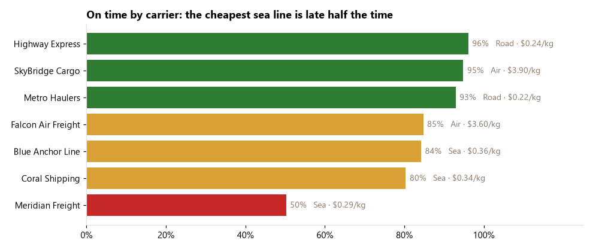
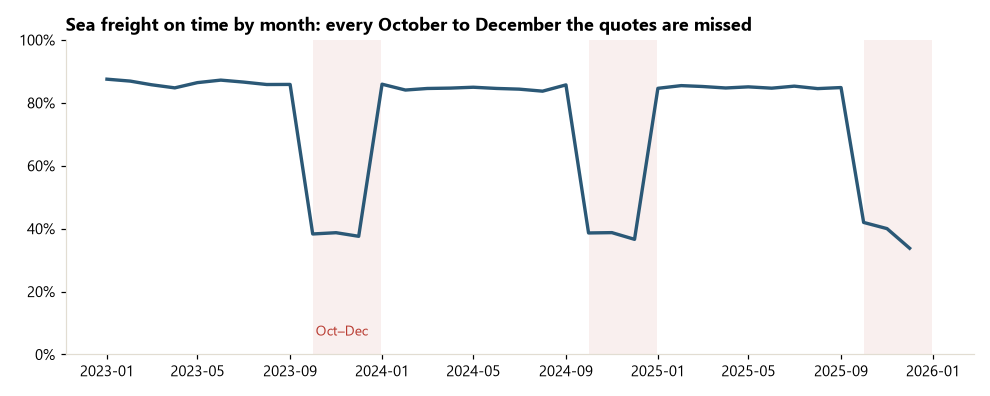
A better reorder rule, tested on a year it never saw
Reorder point = average weekly demand × lead time + safety stock, with safety stock from demand and lead-time variability and a service level by ABC-XYZ class (A 98%, B 95%, C 90%). Set on 2023 – 24 data, then 2025 was replayed under both rules with the same demand and the same supplier delays. The replay of the current rule reproduces 2025's actual fill rate (98.07% vs 97.81%).
| 2025 replay | Current rule | Recommended |
|---|---|---|
| Fill rate (units) | 98.07% | 99.41% |
| Line L4 fill rate | 89.8% | 98.9% |
| SKU-weeks short of stock | 10.0% | 3.6% |
| Margin lost to stock-outs | $591k | $240k |
| Average stock value | $4.51M | $4.87M |
| Net effect a year (saved margin − extra carrying cost) | +$273k |
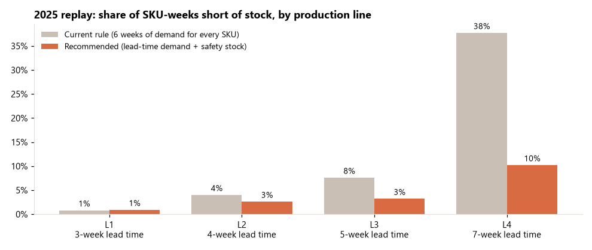
Where the margin goes
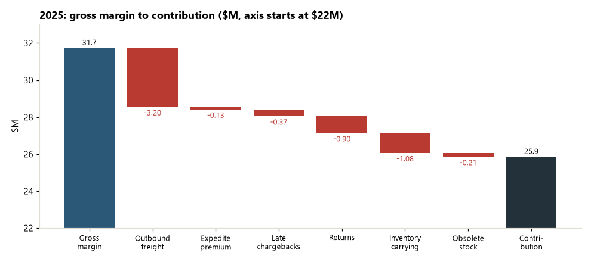
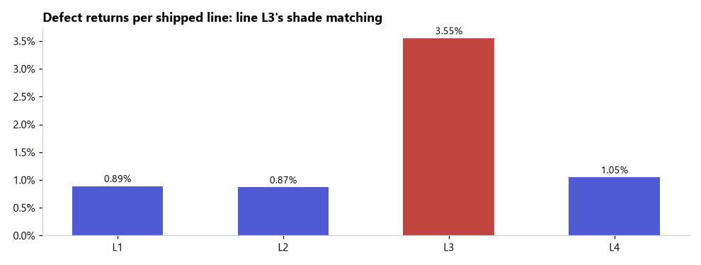
Excel reorder-alert template
One row per active SKU with live formulas for safety stock, reorder point, inventory position, status and suggested order. Service levels sit on a Settings sheet, so a planner can change a target or paste next week's stock and every alert recalculates. At 31 Dec 2025: 26 SKUs to reorder now ($2.04M), 12 of them on line L4.
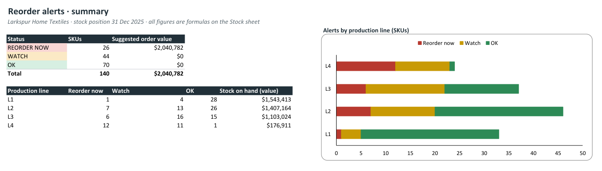
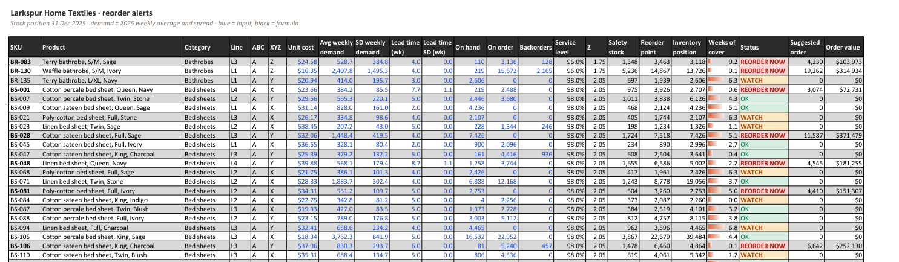
Power BI dashboard
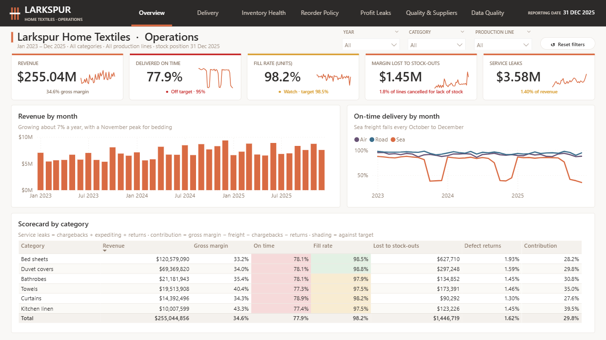
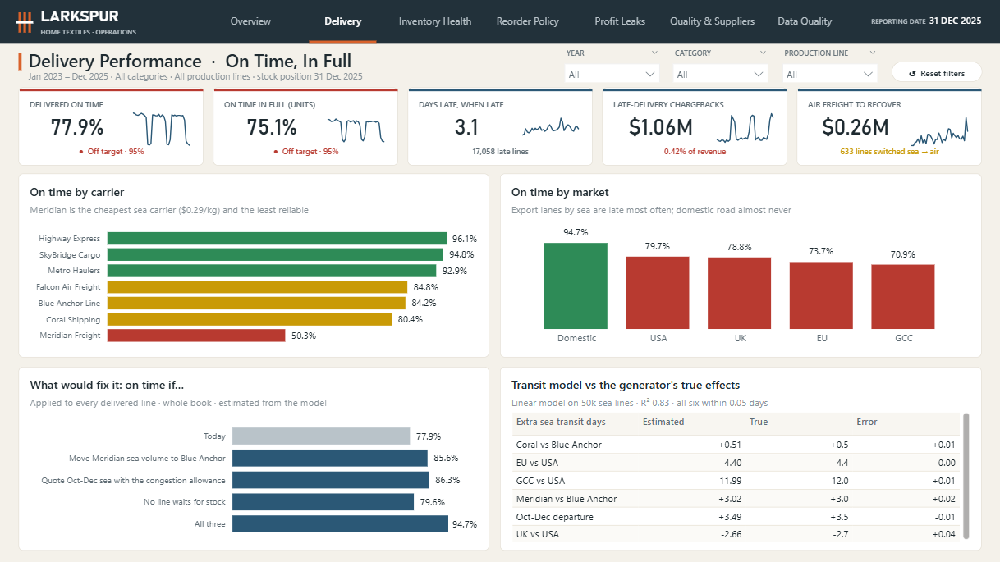
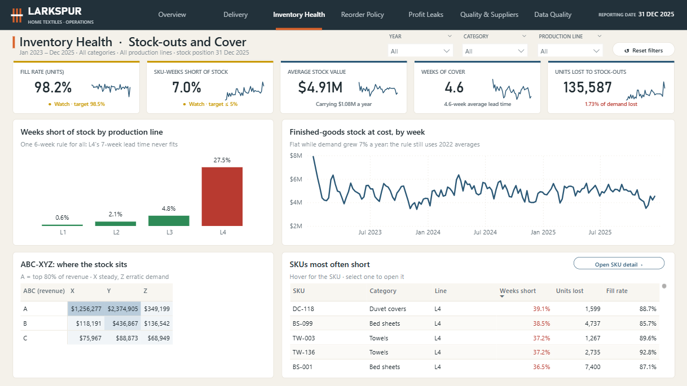
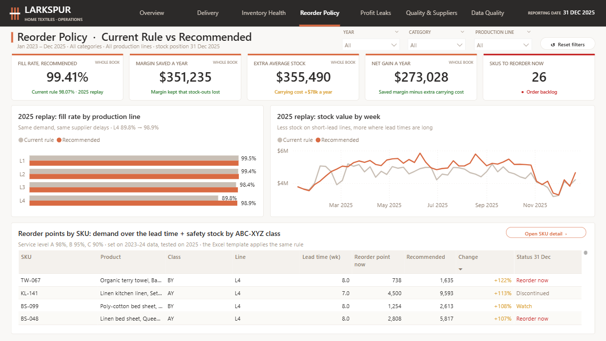
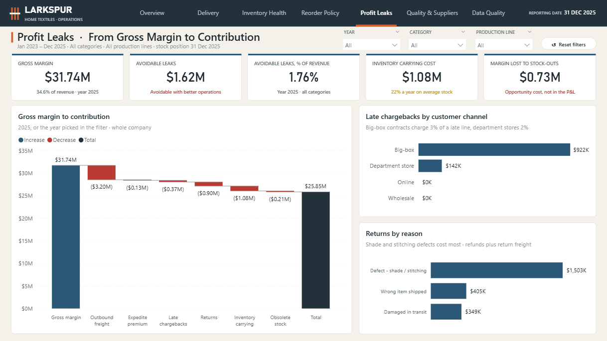
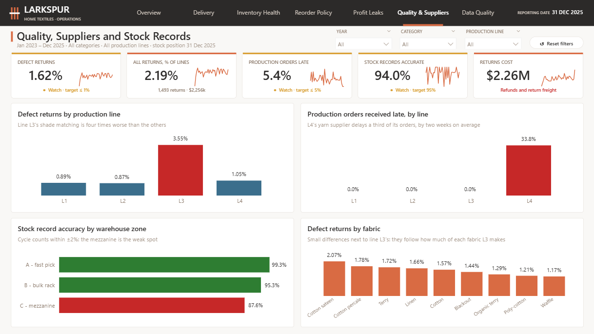
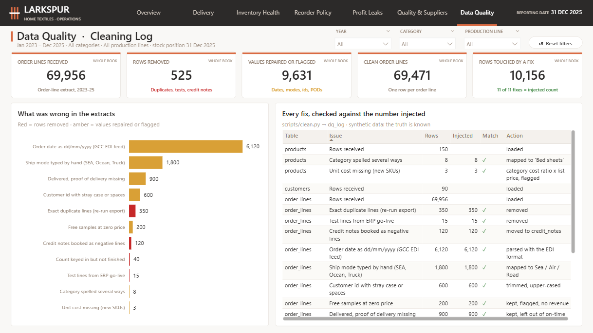
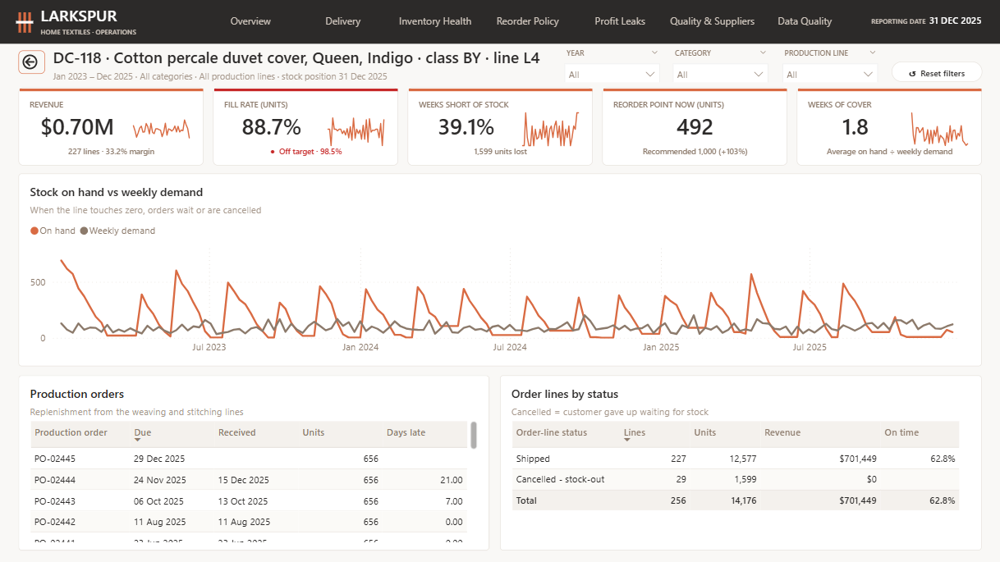